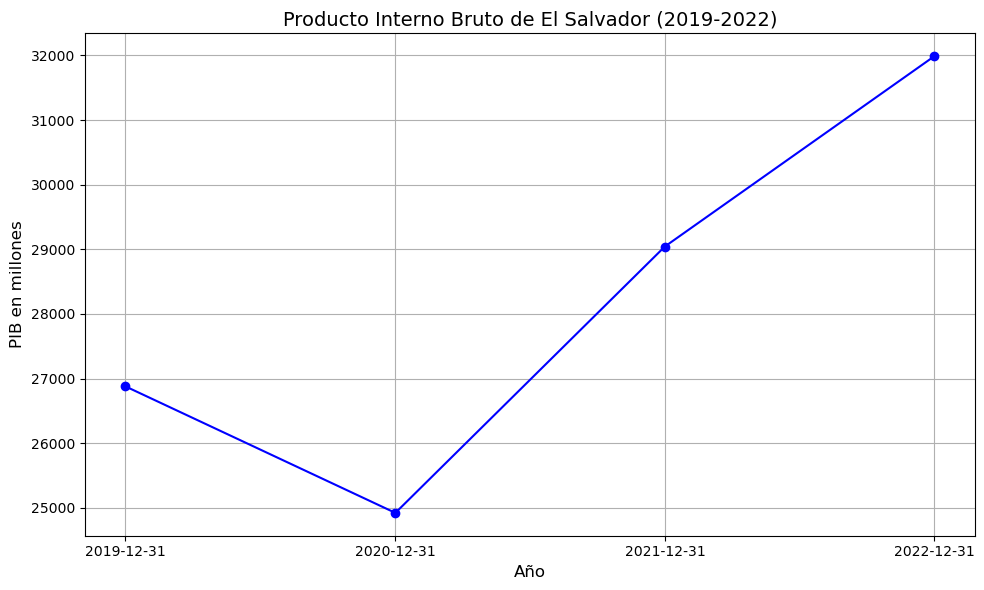
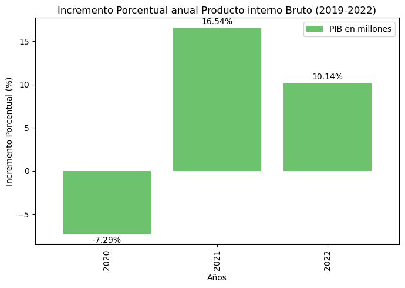

Producto Interno Bruto (PIB)
El Producto Interno Bruto es el valor total de los bienes y servicios producidos en un país durante un periodo determinado. Es el principal indicador de la actividad económica y del crecimiento de una nación.
Relevancia en el análisis
- El uso del Bitcoin podría tener efectos tanto positivos como negativos en el PIB. Por ejemplo, podría aumentar la inclusión financiera y la actividad económica a través de la digitalización, pero también generar incertidumbre y desconfianza en los mercados tradicionales.
- El PIB permite analizar si la adopción del Bitcoin está contribuyendo al crecimiento económico o si está generando efectos adversos, como reducción del consumo interno o de la inversión.
- Al comparar el PIB antes y después de la adopción del Bitcoin, se pueden identificar correlaciones entre esta política y el desempeño económico general del país.
Grafica Producto Interno Bruto de El Salvador

Grafica porcentual de cambio

A partir de 2021, el PIB mostró una tendencia al alza, lo cual podría estar relacionado con la implementación del bitcoin como moneda de curso legal en El Salvador. Este cambio impulsó la provisión de bienes y servicios adicionales hacia otros países, destacándose iniciativas como la Chivo Wallet. Esta plataforma facilitó transacciones internacionales, como el envío de remesas y el pago de servicios o productos que aceptan bitcoin como medio de pago, contribuyendo así al crecimiento económico